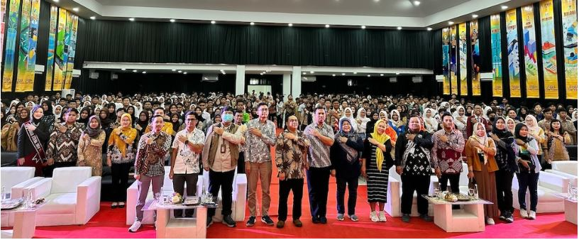
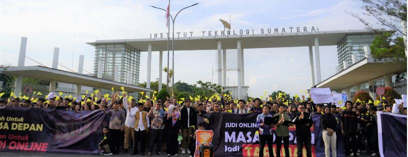

ITERA Open House 2025: Serunya Ngebedah Kampus Impian!
Antusiasme Pelajar

ITERA Open House 2025 sukses digelar dan seru banget! Ribuan siswa SMA/SMK dari seluruh Lampung hadir untuk mengenal lebih dekat ITERA.
Kuota Mahasiswa Baru
Tahun ini, ITERA bakal menerima 5.240 mahasiswa baru di 41 program studi S1 dengan pembagian kuota:
- SNBP: minimal 30%
- SNBT: minimal 65%
- Mandiri: maksimal 5%
Lebih dari 2.000 pelajar dari berbagai SMA/SMK mengikuti acara ini pada Sabtu, 25 Januari 2025, di Gedung Kuliah Umum (GKU) 2 ITERA.
Halaman Lengkap PMB ITERA
Berita-berita penerimaan mahasiswa baru ITERA di tautan berikut ini.
PMB ITERA
ITERA Deklarasi Anti-Judi Online
Komitmen Civitas Akademika

Bandar Lampung – ITERA menggelar Deklarasi Anti-Judi Online di gerbang utama kampus pada Jumat (14/2), demi menciptakan lingkungan akademik bersih dari perjudian daring.
Poin-Poin Deklarasi
Puncak acara ditandai dengan pembacaan deklarasi oleh perwakilan dosen, tenaga pendidik, dan mahasiswa, yang mencakup tiga poin utama:
- Menyerukan pemberantasan judi online dalam segala bentuknya.
- Menuntut aparat penegak hukum untuk bertindak tegas terhadap pelaku bisnis judi online.
- Mendukung edukasi masyarakat mengenai dampak negatif judi online.
Testimoni Mahasiswa
Presiden Mahasiswa KM-ITERA menyoroti dampak finansial judi online, yang sering kali berujung pada penggunaan pinjaman online.
Berita Terlengkap Seputar ITERA
Akses berita-berita terkini ITERA di tautan berikut ini. Ada banyak informasi edukatif dan kerjasam yang dilakukan oleh itera.
Berita ITERA